Sampling Your Posterior

The data
So, we’ve flipped the globe 6 times, and drawn W,L,W,W,W,L,W,L,W

Grid Sampling
In a data frame:
1. Use seq to come up with a set of possible probability values
2. Add a column of priors. Make it flat, so they’re all 1, or get fancy.
3. Calculate your likelihoods for each probability with size=9 and W=6
4. Calculate your prior * likelihood
5. Calculate your posterior, as the previous value divided by the sum of all prior*likelihoods
And we’ve made a grid sample
How do we query our posterior?
Our posterior
prob prior likelihood posterior
1 0.00 1 0.000000e+00 0.000000e+00
2 0.01 1 8.150512e-11 8.150511e-12
3 0.02 1 5.059848e-09 5.059848e-10
4 0.03 1 5.588844e-08 5.588844e-09
5 0.04 1 3.044058e-07 3.044058e-08
6 0.05 1 1.125305e-06 1.125305e-07Our posterior at it’s peak
prob prior likelihood posterior
1 0.67 1 0.2730674 0.02730674
2 0.66 1 0.2728850 0.02728850
3 0.68 1 0.2721339 0.02721339
4 0.65 1 0.2716211 0.02716211
5 0.69 1 0.2700592 0.02700591
6 0.64 1 0.2693188 0.02693188How do we query our posterior?
- We could look at all values of the posterior and calcuate the density
- We could look at the highest posterior or weighted average
- We could integrate over a selected range and…
AH! Intergrals? No! Samples? Yes!
- Posteriors summarize the frequency of certain values
- We can leverage that and use our grid sample to generate an empirical distribution
- This lets us develop an intuitive notion of the posterior, and manipulate it easily
Sampling from your Posterior
Sampling from your Posterior
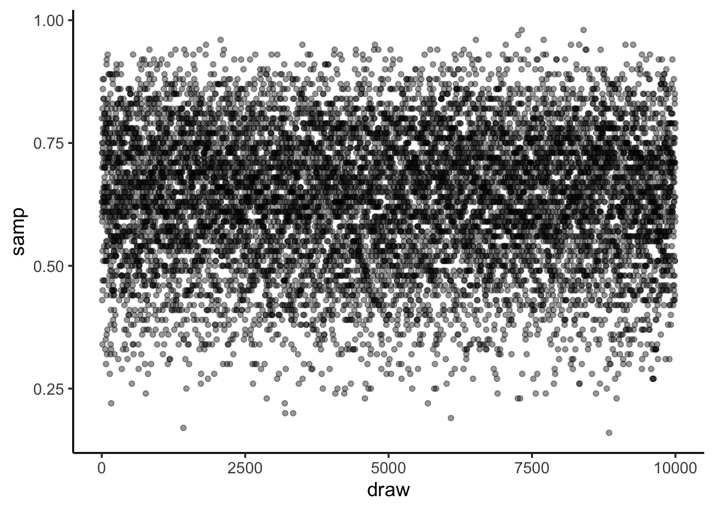
Sampling from your Posterior: MCMC style
samp_df <- tibble(samp = samp, draw = 1:length(samp))
qplot(y = samp, x = draw, data = samp_df, geom="line")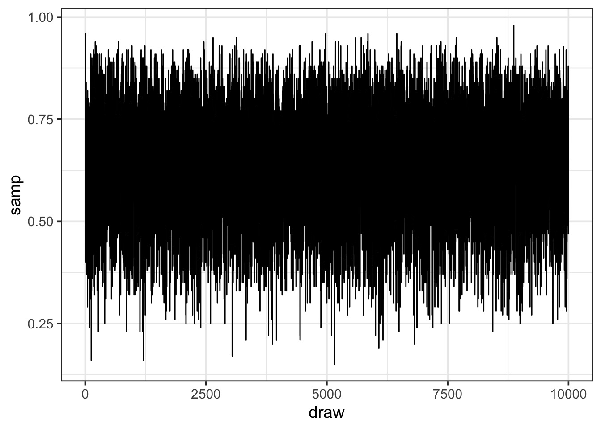
What can we do with this: histogram
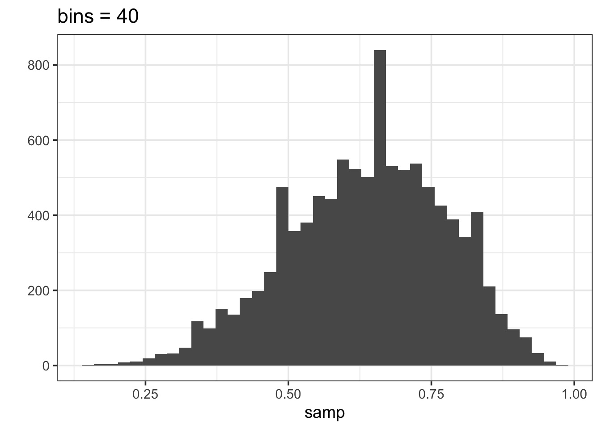
Histograms can show weakness of grid
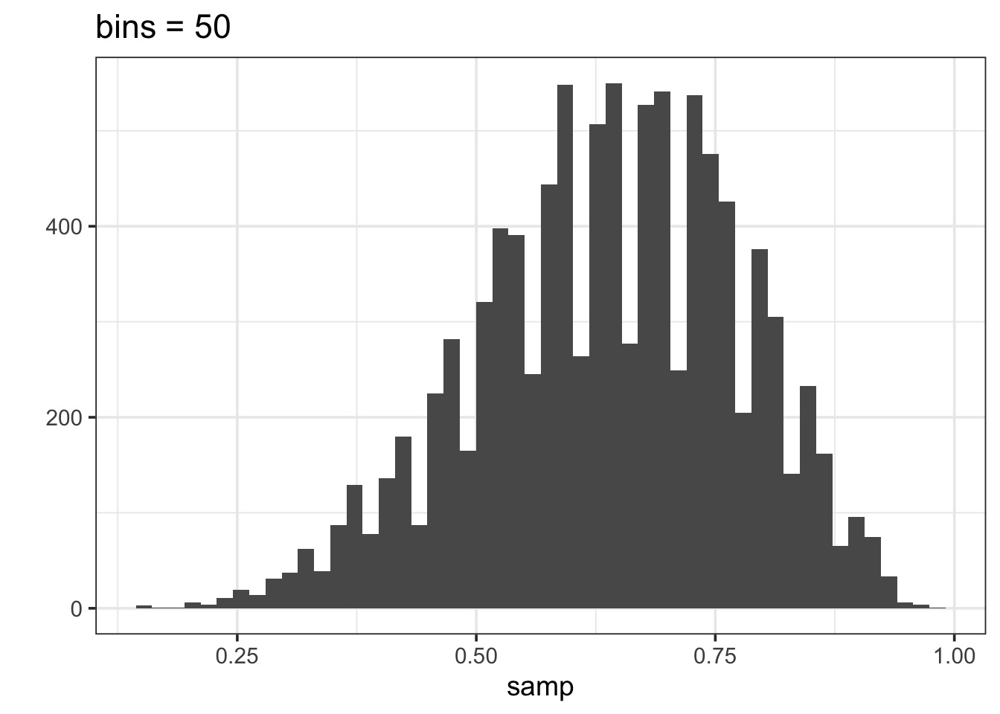
What can we do with this: density
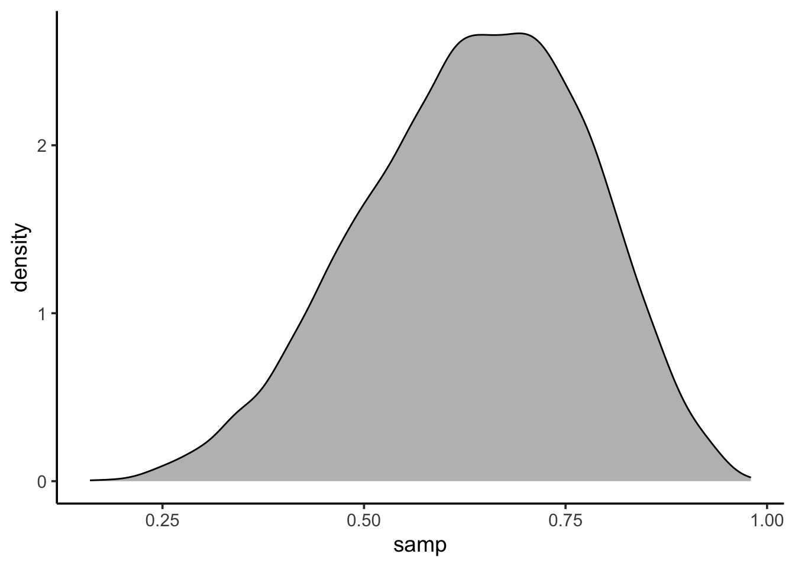
What do you learn from this?
Summarizing a Parameter with a Sample
Summarizing a sample of a posterior: Questions we can ask
How much of the posterior is less than a certain value?
How much of the posterior is greater than a certain value?
What value of the posterior has the highest density?
What is the range of the values of some percent of the posterior? e.g., 90%
Looking at mass < a key value
- Let’s say we wanted the % of the posterior < 0.4
[1] 0.0522So, 5.22% of the posterior
Plotting
It’s a filter thang!
Plotting
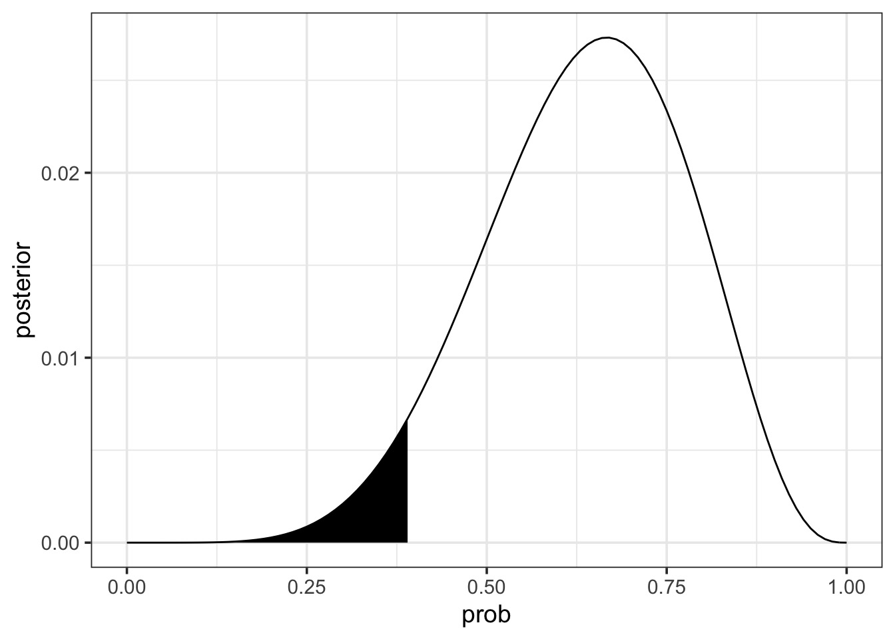
Try a few
What % is < 0.6
What % is > 0.6
What % is between 0.2 and 0.6
How do we describe a parameter
- Typically we want to know a parameter estimate and incormation about uncertainty
- Uncertainty can be summarized via the distribution of a large sample
- We can look at credible intervals based on mass of sample
- We can look at credible intervals based on mass of sample
- We have a few point estimates we can also draw from a sample
- Mean, median, mode
Summarizing Uncertainty: 50th Percentile Interval
We often look at the 95% interval
2.5% 97.5%
0.35 0.88 But this is arbitrary (thanks, Fisher), and unstable. Lower intervals are more stable
25% 75%
0.54 0.74 Summarizing Uncertainty: 50th Percentile Interval
We can calculate quantiles using the cummulative density of the posterior
Summarizing Uncertainty: 50th Percentile Interval
Visualize as before
Summarizing Uncertainty: 50th Percentile Interval
Visualize as before 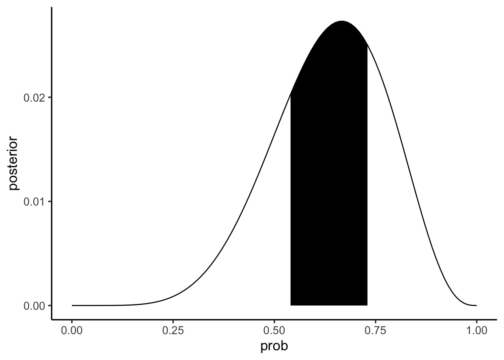
Note that this is not the Highest Posterior Density Interval
PI v. HPDI
- Percentile Intervals get interval around median that covers X% of the distribution
- Highest Posteriod Density Interval gets interval with highest density containing 50% of mass of distribution
25% 75%
0.54 0.74 |0.5 0.5|
0.54 0.73 PI v. HPDI for a Skewed Distribution
25% 75%
0.2433043 0.5394459 |0.5 0.5|
0.1908544 0.4829067 PI v. HPDI
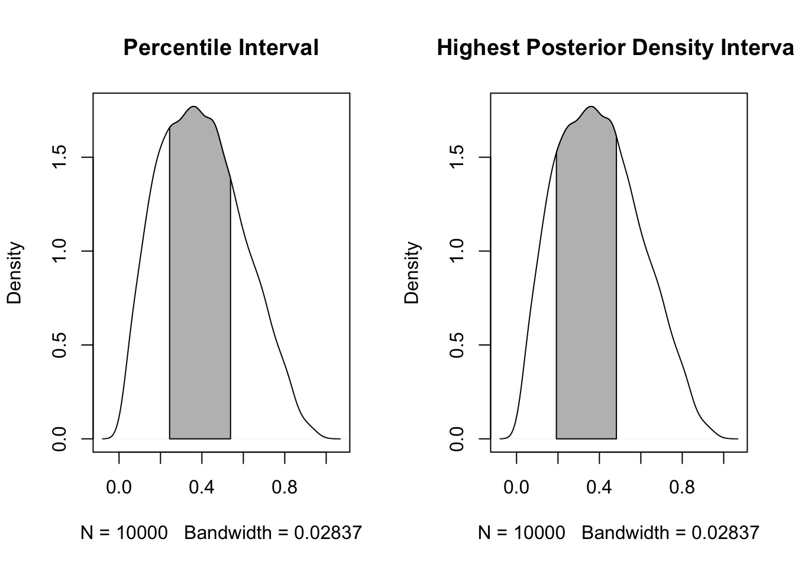
So which interval to use?
- Usually, they are quite similar
- PI communicates distirbution shape for parameter
- HPDI matches more with the mass of the parameter that is consistent with the data
- BUT - computationally intensive and sensitive to # of posterior draws
- If the two are very different, the problem is not which interval type to use
- It’s in your model/data! Buyer beware!
Which Point Estimate: Mean, Median, Mode?
[1] 0.637585[1] 0.65[1] 0.59Applying a Loss Function!
- Well, let’s think about the cost of getting it wrong!
- Assume a point estimate of d
- The cost of being wrong if using d is:
\(\sum{posterior * \left |(d-p)\right |}\)
- Could have also squared or done other things depending on cost of being wrong
- Can apply this to chosing \(\alpha\) and \(\beta\) in frequentist stats!
Linear Loss Function Says Median (it’s close)!
loss_fun <- function(d) sum(grid$posterior * abs(d - grid$prob))
loss <- sapply(grid$prob, loss_fun)
grid$prob[which.min(loss)][1] 0.64Linear Loss Function Says Median (it’s close)!
grid$loss <- loss
ggplot(grid) +
geom_line(aes(x = prob, y = loss)) +
geom_point(x = grid$prob[which.min(loss)], y = min(loss),
size = 2) +
geom_vline(data = data.frame(value = c(mean(samp),
median(samp),
samp[which.max(grid$posterior)]),
measure = c("mean", "median", "mode")),
aes(xintercept = value, color = measure)) +
scale_color_manual(values = c("red", "blue", "black"))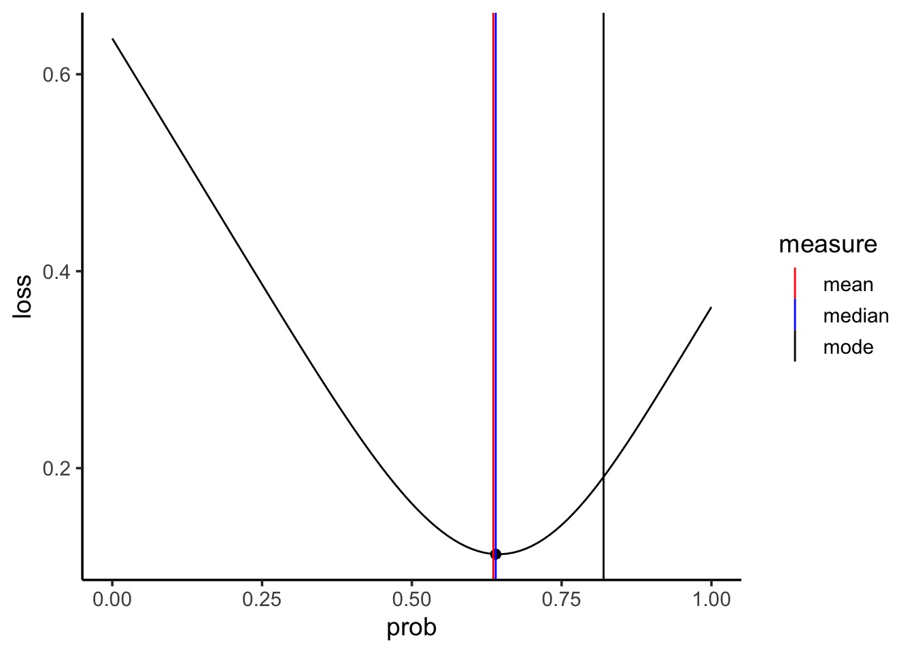
Choosing a loss function
- Usually the mean and median will agree
- If the cost of being wrong is higher, go with the mean
- If this is a big problem, or big discrepancy, problem might be deeper
Using your samples for model checking
Model Checking - Why?
- We’re in Simulation land
- A lot can go wrong do to small errors in our model
- A lot can go wrong because of big errors in our model
- Maybe our software failed (i.e., convergence)
- Maybe our sampling design cannot produce valid estimates
How do you check models?
- Did you reproduce your observed summarized data?
- Did you reproduce patterns in your raw data?
Simulating from your Posterior Sample
- Make random draws using your sampled parameters
w
0 1 2 3 4 5 6 7 8 9
21 127 361 724 1269 1680 2039 1911 1298 570 Simulating from your Posterior Sample
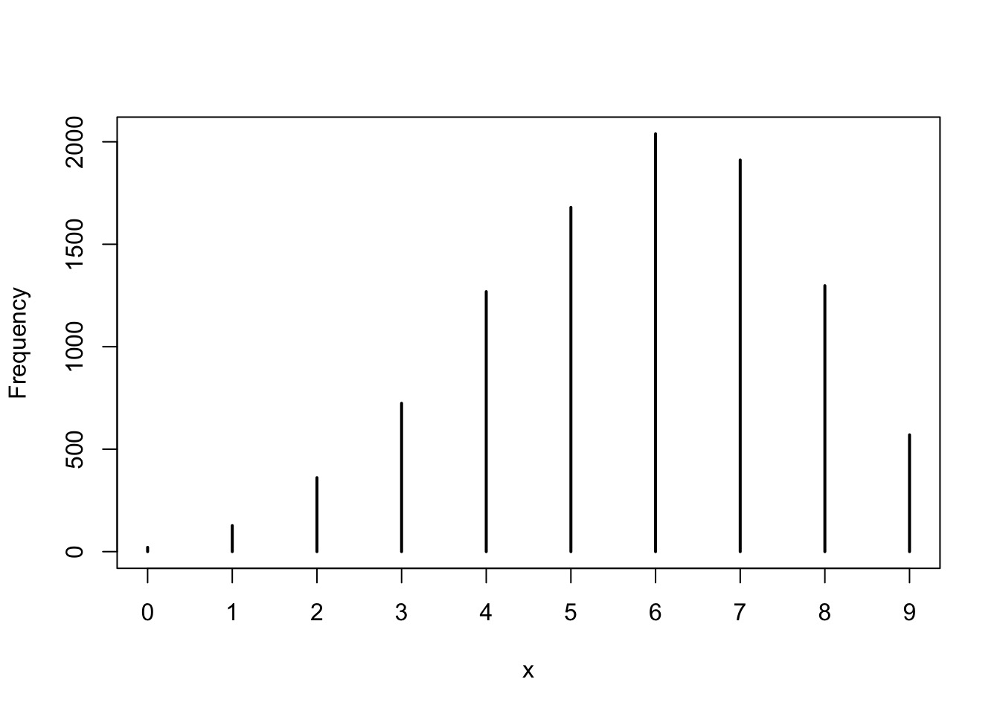
Note that 6 is the peak, and our draw was w=6!
Getting Fancier with Checking
- We drew W,L,W,W,W,L,W,L,W
- Can we reproduce 3 Ws as the most common run?
- This will require fancier use of the posterior to simulate order of observations
- See slide code - but, this empahsized the subjective nature of model checking!
So, reproducing runs of W
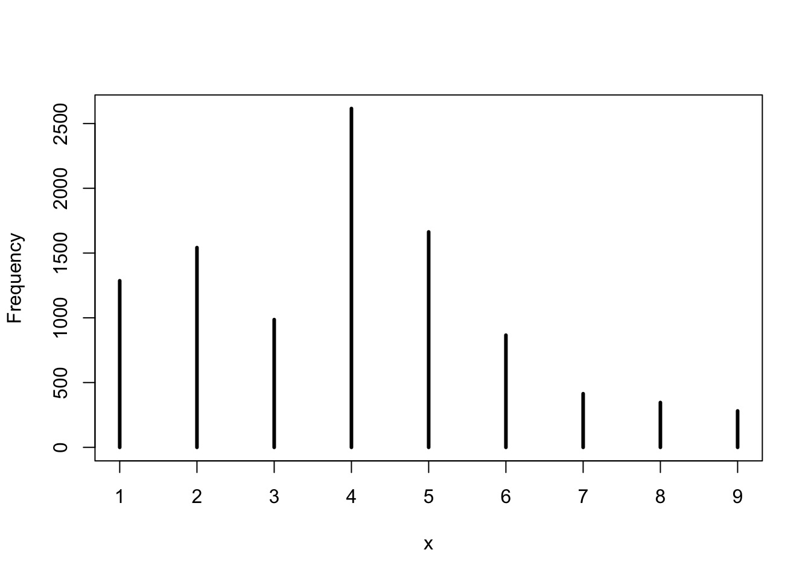
We had a run of 3 - not bad, not spot on - is this a good model or check?
Exercise
- Choose a # of observations and # of tosses that land on W
- Use grid sampling to get a posterior with your choice of prior
- Derive point estimates and uncertainty
- Did your model checks show you were all good?